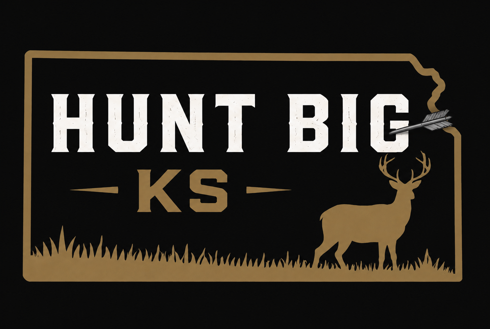
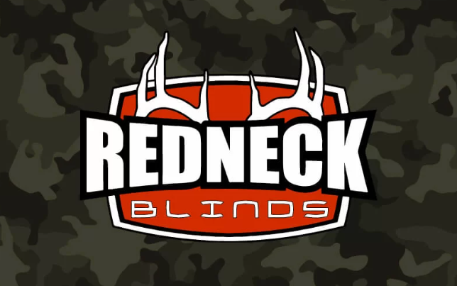

Your local source for premium Redneck hunting equipment in Northeast Kansas.
Hunt Big KS was created to provide Northeast Kansas hunters with access to premium hunting equipment backed by local, personal service and knowledge.
As an authorized Redneck dealer, we provide high-quality hard-sided hunting blinds, tower systems, and accessories designed for serious hunters who expect comfort, durability, and reliability season after season.
Whether you are upgrading your current setup or building a new hunting location, Hunt Big KS is here to help you find the right equipment for your property and your hunting goals.
Located in Northeast Kansas, we provide personal service and support before and after your purchase.
Offering trusted Redneck products built for comfort, concealment, and long-term performance.
We understand what hunters need because quality equipment matters when it counts.